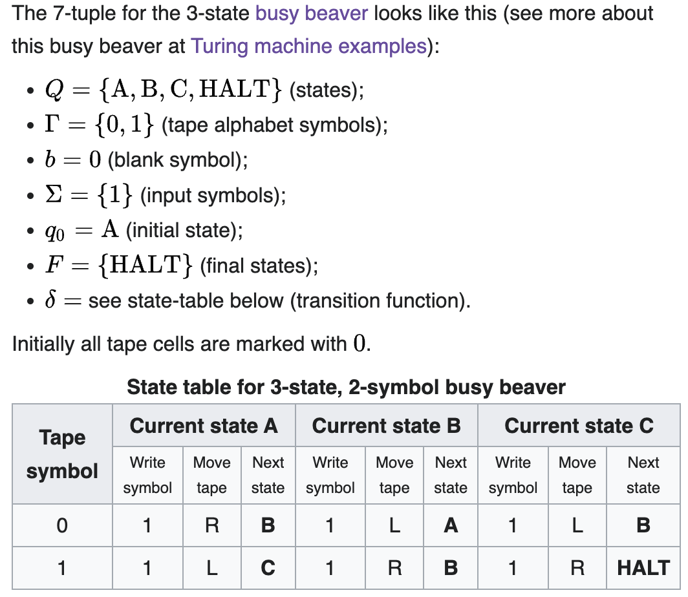

This was originally an extension of my Information theory post, but it got too long and started diverging enough (into e.g. theoretical computer science) that it no longer fits. If you're trying to read these as explainers (not recommended, but I won't stop you lol) I'd recommend going back and reading that information theory post first, assuming you don't already have some experience with information theory.
Algorithmic information theory and Kolmogorov complexity: Non-random, structured information
To talk about information involved in computation, instead of information generated stochastically — data structures instead of random outputs — we start to get into algorithmic information theory (AIT). Wikipedia calls it a branch of theoretical computer science. To take their quote:
According to Gregory Chaitin, it is "the result of putting Shannon's information theory and Turing's computability theory into a cocktail shaker and shaking vigorously."
AIT mostly studies strings — how to measure their complexity, and what to do with those measures. This is nice because lots of math can be described in terms of strings; it gives us extra perspective on this math, I guess. (As of writing this, I don't really have a good intuition for what this actually means.)
I'm drawing here from three main sources:
The first notion to define is Kolmogorov Complexity, abbreviated below as K-complexity, and (from Wikipedia) "also known as algorithmic complexity, Solomonoff–Kolmogorov–Chaitin complexity, program-size complexity, descriptive complexity, or algorithmic entropy" along with the other 93 names of god. Heuristically or something, we should think that this is an important concept because it has so many names. Going into it, though, keep in mind one of its names: algorithmic entropy. The fact that this is another measure of entropy, a different way of looking at a similar fundamental idea, should maybe sit in the back of your mind as we proceed.
I think the intuition of K-complexity is pretty simple. On a high level of abstraction, the K-complexity of a string is the length of the shortest program you could write to generate that string. You can also think of this as the K-complexity as being defined by "the shortest possible description of a string" in some formal sense; it's the same intuition.
To formalize this, we'll introduce a couple ideas.
First, a decompressor: literally just a program that takes in a string (usually $x$) and outputs another string (usually $y$). It's a decompressor because it's a program that takes a description of a string $x$ — i.e. a compressed version of a string — and turns it into the string itself, $y$. We write this as $D(x) = y$. A
The decompressor can also be called a "description mode" or "description language," which in many cases is more intuitive. For example (though informally), "the numbers 0 and 1 repeated ten times" is a description ($x$) of the string 01010101010101010101 ($y$). In this case, our decompressor is something like "turn the natural language description into the string."
To make this a little more formal, we can use a different description mode: Python, instead of natural language. The string print("01" * 10) when run by a python interpreter outputs our string, 01010101010101010101. Hence, Python is our 'description mode'; when we evaluate $x$ (our program) with $D$ (our description mode) we get $y$ (our desired string).
Hence why it's a "description mode" — the decompressor is a way of turning the description into the thing being described. Every description has meaning only in the context of a description mode — without a description mode, there are no rules given to allow the description to "make sense". There need to be formally-defined rules to evaluate the description (otherwise you could just make up a random string and say it was a perfect description for any other string). So, to be clear, while I used the natural language example above, you couldn't just use that as a description mode straightforwardly; a description mode must be a computable function.
The K-complexity of a string $y$ with respect to a specific description mode $D$ is the length of the string's shortest description ($x$). Formally:
$$ C_D(y) = \min \:{l(x) \: | \: D(x) = y}$$ Where $l(x)$ denotes the length of $x$. (notation used by the authors; I used $\text{len}(x)$ above but I don't want to have to translate notation all the time in the future. Sorry for changing notation all the time lol. Let's just say it's different perspectives on the same idea!)
(There is a lot of random notation used for K-complexity, so to be honest this is fitting. The book uses the above $C_D$ and it feels nice and intuitive to me — complexity with respect to the description mode D — so I'll go with that. You might also see for example $K(x)$ (for Kolmogorov) or $H(x)$, reusing the notation for entropy since this is algorithmic entropy — both of these were used by Kolmogorov himself. To quote the authors: "Unfortunately, the notation and terminology related to Kolmogorov complexity is not very logical (and different people often use different notation). Even the same authors use different notation in different papers" (xii).)
Typically we'll place formal limitations on what our $D$ can be. To make things nice we'll say that $D$ is a function that takes a binary string and outputs a binary string (since we can encode all strings as a binary string, usually trivially). One way to notate this is to say $\Xi = {0,1}^{*}$ (i.e. $\Xi$, Xi, represents the set of all binary strings), and to, say, define $D$ as $D: \Xi → \Xi$ There are more details given by computability theory which we could go into an infinite rabbit hole describing, but I'll leave that there for now.
One question that this definition left me with was, why can't you just make up a description mode and hide all the complexity in that? Then you could have a program with length 0 that deterministically produces your desired output, and this notion becomes kind of useless. We can't answer this now, but we'll be able to in a moment.
We say that a decompressor/description mode $D_1$ is not worse than another $D_2$ if its output for all strings $x$ differs only by a constant, $c$. Written formally, $D_1$ is not worse than $D_2$ if $$C_{D_1}(x) \leq C_{D_2}(x)+ c.$$ Theorem. There is a description mode $D$ that is not worse than any other one: for every description mode $D'$ there is a constant c such that $$C_D(x) \leq C_{D'}(x)+ c$$ for every string x. This constant $c$ might be different for every $D'$, but it will still be a constant. (Spoiler: this is a universal turing machine.)
. . .
Brief interlude: Big-O notation
(sources: stack overflow, Rob Bell)
We use Big-O notation to relate the length of computation to the size of the input.
This is describing the worst case — it's an upper bound on the function.(Hopefully this is correct. the stack overflow answer + wikipedia page indicate that there are lots of other notations but I don't really care about them right now.)
. . .
I think the idea behind "bounded by a constant" is related ish to the vibes of Big-O notation. The constant can be very large, but it will be a constant. If your algorithm is highly complex (like $\mathcal{O}(2^{n^n})$ or something, I don't know, I'm making this up) this constant can be in a sense "negligible." Quoting the authors:
One could say that such a tolerance makes the complexity notion practically useless, as the constant $c$ can be very large. However, nobody managed to get any reasonable theory that overcomes this difficulty and defines complexity with better precision.
Anyway, the way we set up a proof for this theorem is just by prefixing any string we input with a binary form of the algorithm we use to decompress it normally. Literally we just use $$D(Py)=P(y)$$ where $Py$ is just the program $P$ (a description mode used to evaluate $y$). Since description modes are computable functions, we must be able to encode them on the tape. An important note here though is that $P$ must be self-delimiting, i.e. we must be able to tell unambiguously where $P$ ends and $y$ begins. This is not obviously the case for all algorithms; programs written in Python, for example, are not self-delimiting; there's no end marker in the programs. You can add comments of arbitrary length that don't affect the program's execution at the end. You can think of it this way: if you concatenate two Python files, it's not always going to be clear where one ends and the next begins.
We can make any $P$ self-delimiting, though, relatively trivially: you take its binary form, double every bit (e.g. 010011 becomes 001100001111) and then append the digits 01 at the end. This way, you can simply evaluate the doubled digits in bit-pairs; each bit-pair will either be 00 or 11 and then when you encounter the bit-pair 01 you know that $P$ has ended and $y$ is beginning.
Anyway, if we set up this description mode $D$ that just evaluates $Py$ for any $P$ and any $y$, we can say that if $y$ is the shortest description of $x$ (a string) with respect to $P$, $Py$ is also a description of $x$ with respect to $D$.
The shortest description of $x$ with respect to $D$ is at most $Py$ (there may or may not exist some shorter description), and hence the shortest description of $x$ with respect to $D$ is at most longer, by the length of $P$, than the shortest description of $x$ with respect to $P$. Formally: $$ C_D(x) \leq C_P(x) + l(P).$$where $l(P)$ is the length of our encoding of $P$ in binary (which may be altered from some original $P$ such that it is self-delimiting or whatever, in which case this might look something like $2\cdot l(P_{\text{original}}) + 1$, but in which case it would be linear so it doesn't really matter).
Hence, $D$ is a "universal decompressor" or "universal algorithm": it is "not worse" than any other decompressor. We say that this description mode $D$ is optimal.
Now we can answer the question from earlier: why can't you just make up a description mode and hide all the complexity in that? Well, you can. But it doesn't make K-complexity trivial, because when you're comparing this description you just made up to others using this optimal algorithm, the description mode is encoded in the string too!
This whole time we've been secretly working with Turing machines. Turing machines provide a neat way to formalize the notion of "algorithm," which I'll talk about now.
In principle, all information can be represented as a single binary sequence. It might be very long, very complex, very confusing, but in principle, anything that we can describe mathematically — from neuron cells to sound waves to physical particles — can be represented as a binary sequence. If we assume that the universe is actually a deterministic process (I mean, maybe a big assumption) then the entire universe could be represented as a binary string.
Turing machines are extremely simple, formal computers that operate on binary strings. You can think of it as a little machine sitting on a tape of infinite length; it can read a single binary character at a time, write a single character at a time, and move left or right one character at a time.
We can formalize it with this absolutely unhinged notation: $$ M = \langle Q, \Gamma, b, \Sigma, \delta, q_0, F \rangle.$$(which I got from Wikipedia, obviously. Note that there are many different ways to formalize the Turing machine, but they all are isomorphic.)
Little note since I wondered what this meant: Wikipedia describes this as a "partial function". A partial function from set $X$ to set $Y$ just maps a subset of $X$ onto the whole of $Y$. $\delta$ is a partial function because it only uses a subset of $Q$ as an input. (full definition reiterated just because I still feel fancy using kinda obscure latex symbols)
Wikipedia has lots of other good stuff about Turing machines. For example:
In the words of van Emde Boas (1990), p. 6: "The set-theoretical object [his formal seven-tuple description similar to the above] provides only partial information on how the machine will behave and what its computations will look like."
For instance,
- There will need to be many decisions on what the symbols actually look like, and a failproof way of reading and writing symbols indefinitely.
- The shift left and shift right operations may shift the tape head across the tape, but when actually building a Turing machine it is more practical to make the tape slide back and forth under the head instead.
- The tape can be finite, and automatically extended with blanks as needed (which is closest to the mathematical definition), but it is more common to think of it as stretching infinitely at one or both ends and being pre-filled with blanks except on the explicitly given finite fragment the tape head is on (this is, of course, not implementable in practice). The tape cannot be fixed in length, since that would not correspond to the given definition and would seriously limit the range of computations the machine can perform to those of a linear bounded automaton if the tape was proportional to the input size, or finite-state machine if it was strictly fixed-length.
They also have a list of examples of Turing machines. The one they provide in the article is clear and good though:

Every other way we've tried to formalize the idea of an "algorithm" has been either equivalent to or weaker than a Turing machine; weaker formalizations include finite-state machines and pushdown automata — I don't currently understand why these are weaker, but it's not a priority for me to understand this statement in particular at the moment so I'll put it on the backburner — and some equivalent formalizations include Alonzo Church's Lambda Calculus, some Cellular automata (such as Rule 110 and Conway's Game of Life, both of which can simulate a Turing machine). Something that is Turing-complete can simulate a Turing machine.
The three most promising approaches to formal computability — lambda calculus ($\lambda$-calculus), Turing machines, and general recursion (not sure what that is but everyone says it's important) — turned out to all be equivalent, and since subsequent attempts have been either equivalent or worse, this gave rise to the Church-Turing Thesis: that a function on the natural numbers is "effectively calculable" iff it is computable by a Turing machine.
Effectively calculable is just a way of saying "something you can calculate, with some intuitive sense of the word 'calculate'". Here's how Turing explains the term:
We shall use the expression "computable function" to mean a function calculable by a machine, and let "effectively calculable" refer to the intuitive idea without particular identification with any one of these definitions. (Wikipedia, apparently from Turing's PhD thesis)
It's something like, "effectively calculable means that a human could do it with pen and paper and a simple set of algorithms given infinite time, attention, food, etc." So basically, the idea is that any computation that can be... actually done in some sense can be done by a Turing machine (though not necessarily one that we actually build, because the machine might be too big to fit in the universe or something). Note again that the Church-Turing thesis is a conjecture: it has not been proven. I'm not sure what a proof would even look like, though to be fair that's probably the case for many provable things that haven't been proven yet.)
To reiterate one last time:
Remember how limited the states of a Turing machine are; every machine has only a finite number of states with “if” rules like in the figure above. But somehow, using these and the tape as memory, they can simulate every set of rules, every algorithm ever thought up. Even the distinctively different theory of quantum computers is at most Turing complete. In the 80 years since Turing’s paper, no superior systems have been found. The idea that Turing machines truly capture the idea of “algorithm” is called the Church-Turing thesis. (LessWrong)
There are some cool things on the Hypercomputation Wikipedia page, which I'd recommend checking out. Eventually I'd want to go down that rabbit hole, but for now I will leave that and return to Solomonoff and Kolmogorov.
Anyway, Turing proved that there's one specific Turing machine that can simulate all other Turing machines: the "universal Turing machine." To make it simulate all the other machines, all you need to do is give it the compiler — funny that I didn't actually know this word before, but a compiler is a program that translates code between a source language and a target language, usually between a high-level language and a low-level language, but can be between any language — that translates between whatever machine the universal Turing machine is simulating, and the universal Turing machine itself. You just prepend it to the input — you give the universal Turing machine the compiler, then the input.
Sound familiar? I think this is isomorphic, conceptually, to our optimal description mode we proved the existence of earlier.
The Turing machine takes binary sequences as input, and leaves behind a different binary sequence as output.
If the notion of algorithms is formalized by Turing machines, and all Turing machines can be simulated by the universal Turing machine, then every algorithm can be simulated by the universal Turing machine. Any conversion from any string to any other string can be simulated by the universal Turing machine — in fact, that's just what it's doing.
What can we do with this fact? We kind systematically find truth about the world. You treat algorithms as hypotheses about the processes that govern the world.
One way a time-step physics simulation might work might be that it takes in (a) inputs of the states of the objects it's simulating and (b) the rules or algorithm that it should use to predict the next state, and then outputs a predicted "next state" of the world.
I'm feeling stuck here.
solomonoff induction gives a universal prior for stuff based on this relationship with the complexity of the shortest hypothesis that generates it
formal turing machines